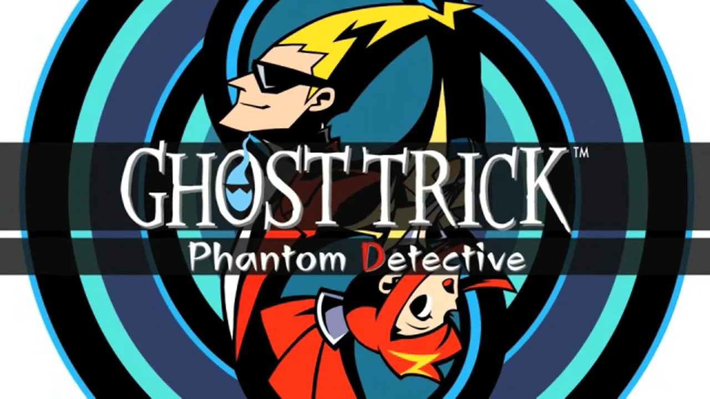
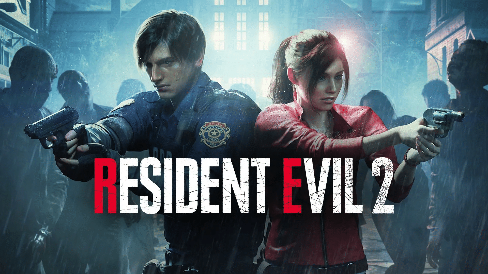

《幽灵诡计》
游戏的故事围绕着主角西塞尔的亡魂展开，玩家需要在一个晚上的时间内协助西塞尔寻找自己的死因和凶手。玩家可以控制西塞尔的亡魂，并利用各种幽灵技巧来解决难题。

《生化危机2》
游戏讲述了自洋馆事件的几个月后，生化兵器自保护伞地下研究所泄露并向市区蔓延，新主人公里昂与克莱尔面对充斥丧尸的街道展开逃生的故事 。

《恐龙危机1》
故事发生在一个神秘的小岛上，一个进行秘密实验的小组突然离奇失踪。玩家将以第三人称视角进行游戏，解开谜题并躲避恐龙的追杀，逐步揭开事件的真相。游戏提供多重结局，依据玩家的不同选择，剧情会有不同的走向。